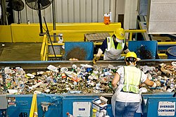

Household Pickup
Scheduled door-to-door waste collection to maintain neighborhood cleanliness.
Within 48 HoursWe are dedicated to keeping your surroundings clean, healthy, and environmentally friendly. Our professional team ensures timely collection and responsible disposal of household, commercial, and community waste. Choose our eco-friendly service to support a cleaner neighborhood and a sustainable future. Our vehicles arrive within 2 days to collect waste from homes, streets, and public areas.
Reliable, eco-friendly waste management tailored for you
Scheduled door-to-door waste collection to maintain neighborhood cleanliness.
Within 48 Hours
Effortless pickup for furniture, electronics, and construction debris.
On Demand
Responsible recycling of paper, plastic, metal, and glass materials.
Eco Priority
Transform kitchen and garden waste into nutrient-rich compost.
Green Option